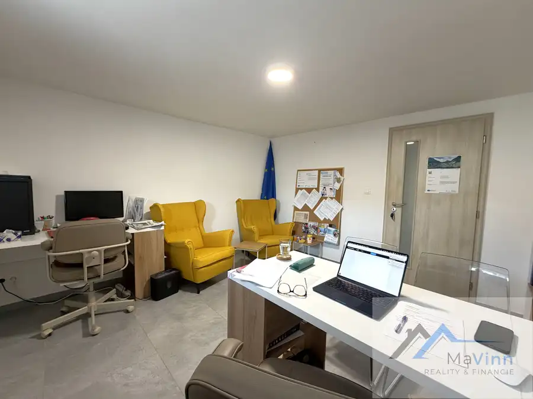
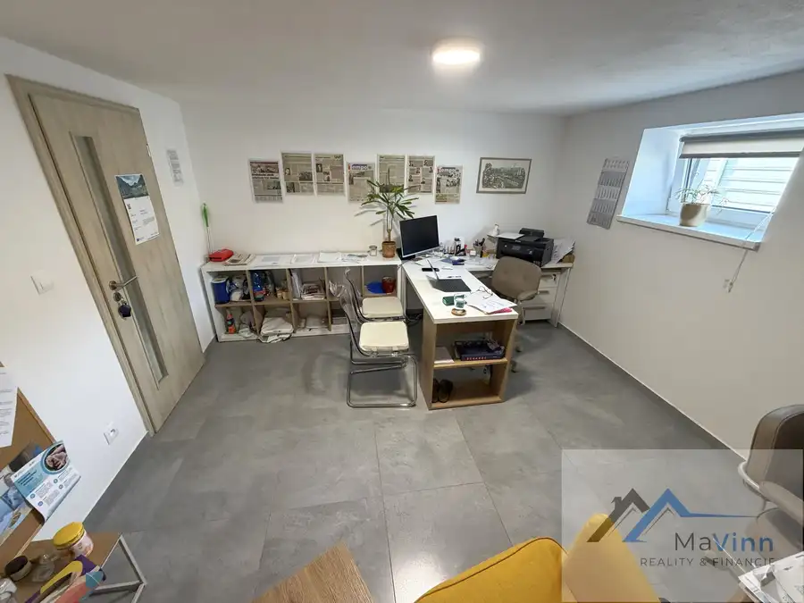
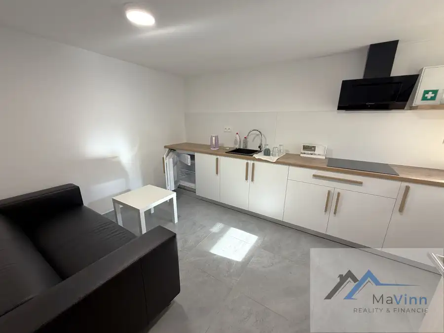
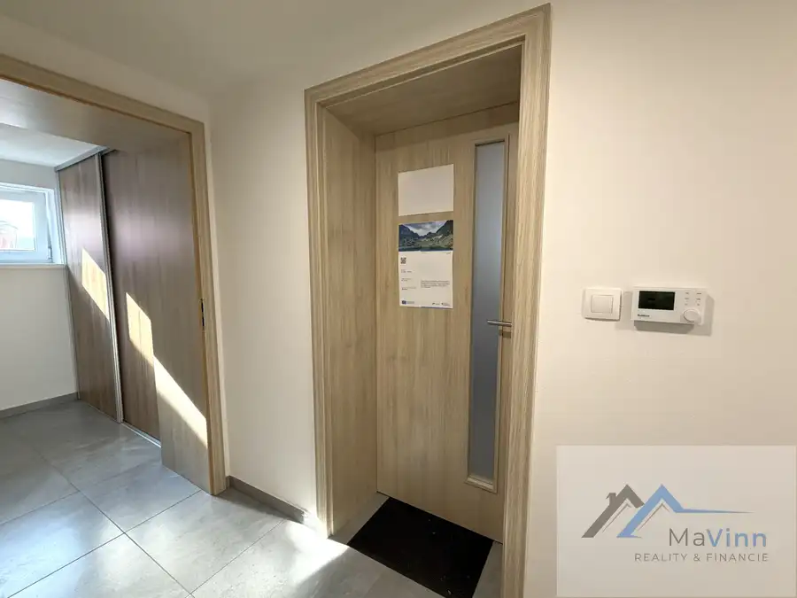
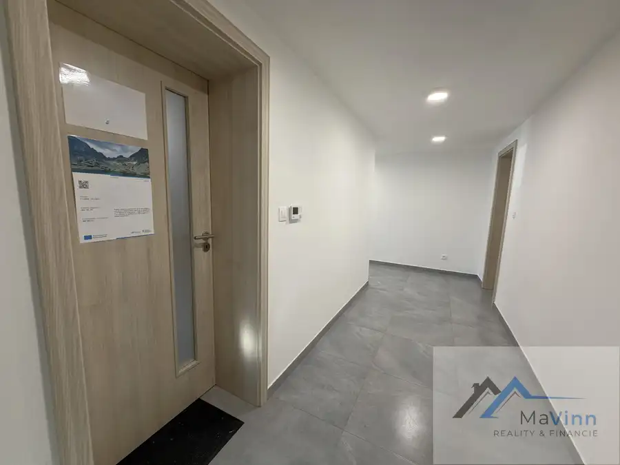

PRIESTOR na prenájom 15 m² Veľké Bielice Partizánske
Partizánske






- Plocha17 m²
- StavKompletná rekonštrukcia
O nehnuteľnosti
MaVinn – reality ponúka na PRENÁJOM priestor pre Vaše podnikanie o veľkosti 15 m² v meste Partizánske časť Veľké Bielice.Obchodný priestor ( kancelária) využitie všestranné je o rozlohe 4m x 3,8m úžitkovej plochy sa nachádza na prízemí budovy s prístupom z hlavnej cesty. Do miestnosti sa vstupuje po schodisku cez spoločnú chodbu. Na prízemí je ešte jeden nájomca a spoločne sa zdieľajú kúpeľňa s WC a kuchyňa s vybavením ako vidieť na foto. Nehnuteľnosť, v ktorej sa ponúkané priestory nachádzajú je celá na komplet novo zrekonštruovaná, s novými stierkami, podlahovým kúrením, plávajúcou podlahou, zateplená, nové okná. Energie: energie sú nastavené paušálne v cene nájmu alebo sa upravia v závislosti od predmetu podnikania. Pred budovou je možnosť parkovania pre zákazníkov a v areály je pre prenajatý priestor vyhradené 1 parkovacie miesta v cene. Objekt je monitorovaný externým kamerovým systémom a celý oplotený s elektrickou bránou na ovládanie. Cena NÁJMU vrátane energii a internetu je 190,-EUR/mesiac. Energie sa môžu prispôsobiť podľa predmetu podnikania. Podmienky prenájmu: 2x depozit vo výške jednomesačného nájmu a jeden servisný poplatok. Ak Vás nehnuteľnosť zaujala, pre bližšie informácie ma neváhajte kontaktovať.Priestor bude voľný od 1.1.2027. Ing. Marianna Pečovskárealitný poradcaM: 0908 524 620E: pecovska@mavinn.skMaVinn s.r.o. reality a financieWEB: www.mavinn.sk
Parametre
- Druh
- Polyfunkčný objekt
- Dátum zverejnenia
- 06. 10. 2026
- Elektrina
- Na pozemku - 230 V
- Energetický certifikát budovy
- nie je
- Odpadové vody
- Na pozemku - Kanalizácia
- Plyn
- Nedostupné
- Počet nadzemných podlaží
- 2
- Počet podzemných podlaží
- 1
- Počet vonkajších parkovacích miest
- 1
- Stav nehnuteľnosti
- Kompletná rekonštrukcia
- Telekomunikácie
- Optická sieť
- Typ
- Prenájom
- Typ konštrukcie
- Tehlová
- Voda
- Na pozemku - Diaľkový vodovod
- Vybavenie
- Vonkajšie parkovacie miesto
- Vykurovanie
- Podlahové
- Zastavaná plocha
- 17 m²
- Úžitková plocha
- 17 m²